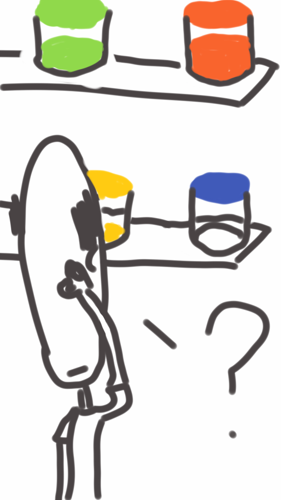
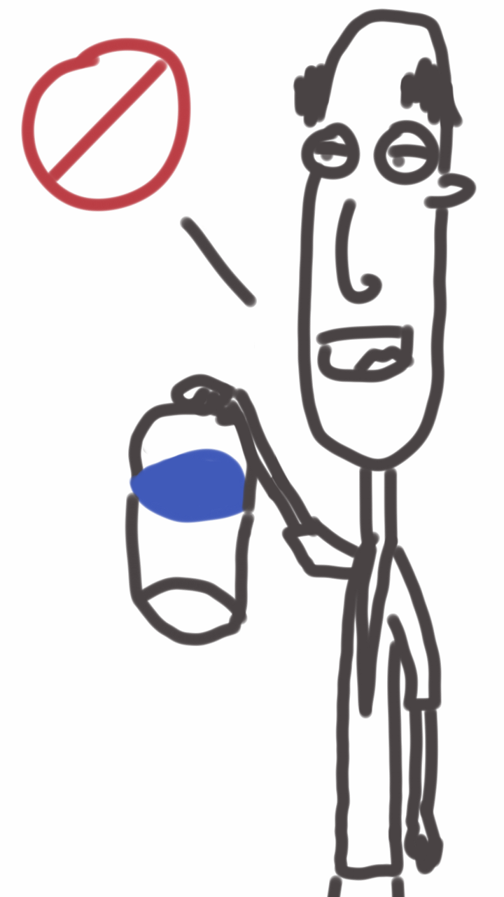
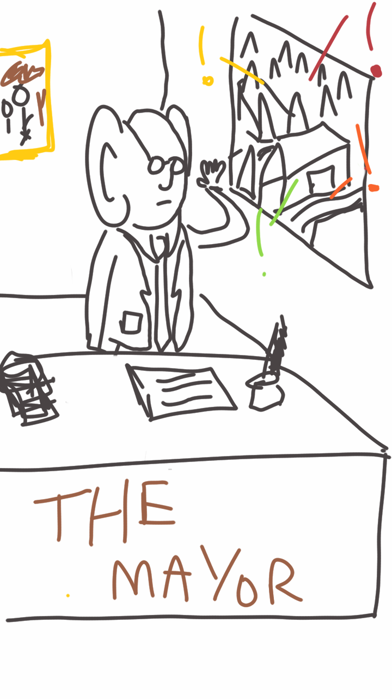
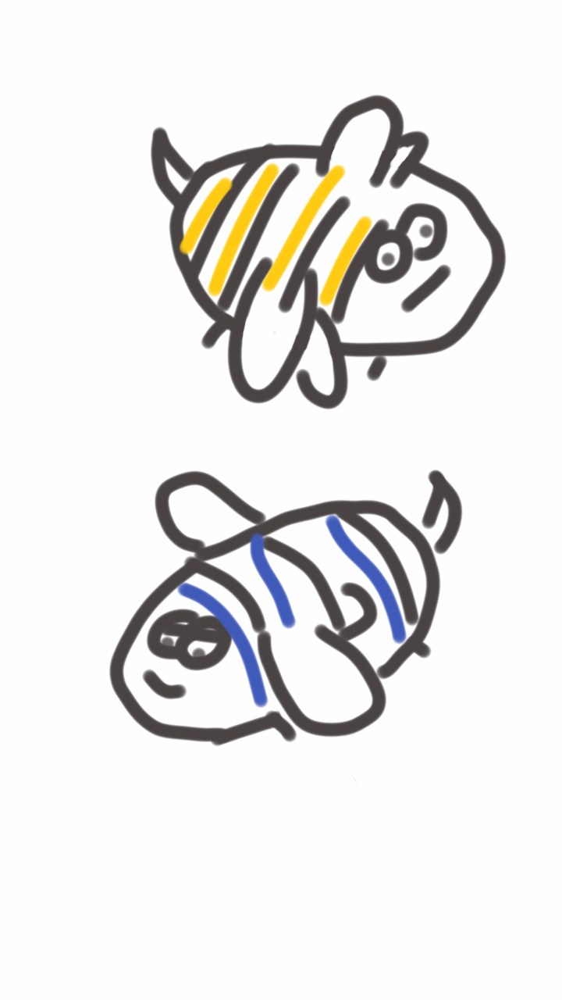
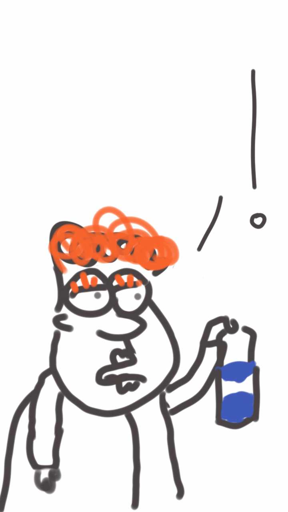
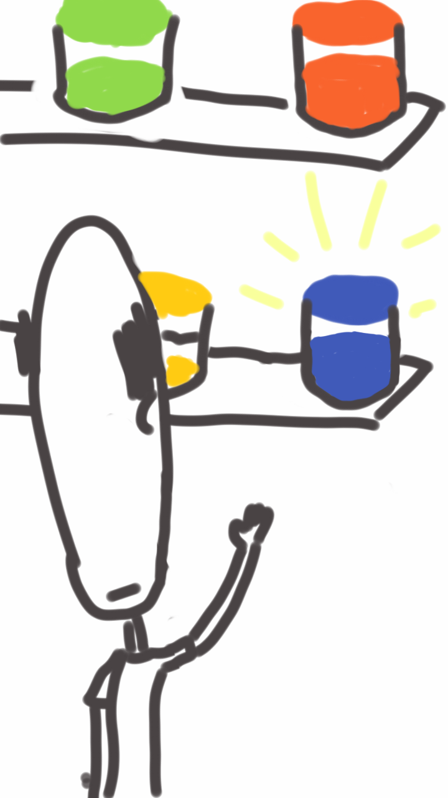
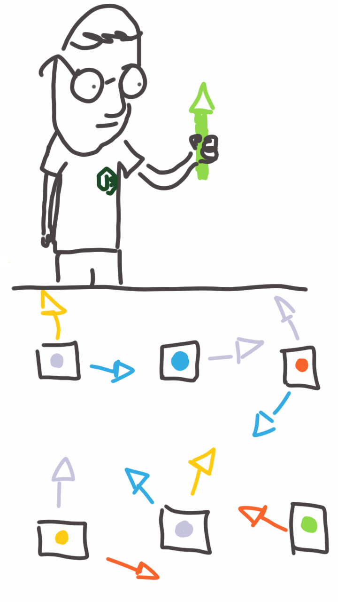

Jacob DuVal
Node Akl
Software built on the Snapchat API
90% node
Beautiful Reference Drawings UAT
Beautiful Reference Drawings UAT
Beautiful Reference Drawings UAT
Scale
Vertical
Horizontal
Humans
Ecosystem
How to build a web server with express, jade and mongodb in 15 minutes
Ecosystem
How to structure your startups hacked together codebase with 200 dependencies and minimal tests so that your 2 new interns can maintain it effectively.
Ecosystem
The trough of despair
drawing hereEcosystem
Dev Noise
drawing here?Ecosystem
Business Noise
Make Money
See above
Ecosystem
Result
Scalable
Latest Technology
Sales happy
Developers happy
Forever
Ecosystem
Javascript fatigue
You're either...
Writing legacy code to push features out quickly = Developer guilt
Taking too long future proofing = Business guilt
Juggling picture
Ecosystem
Is it all possible?
Is there a way we can sidestep this?
Alternatively can we embrace it?
Domain
Mish Guru
Snapchat API
Private
Changes Frequently
Deprecated Rapidly
Dozens of response codes
Changing data
microservices


Jacob's warped idea of what a microservices are.
The Lazy Village

The Lazy Village
- The residents are Lazy
- And Loud
- And really Antisocial
- They don't know each other at all
- They all have a job and must to do it if they can
The Lazy Village
- Someone wants a candle
- Customer: Fred
- Colour: Blue
The Lazy Village
The Lazy Village
The Lazy Village
The Lazy Village
- Someone wants wax
- Customer: Fred
- Colour: Blue
The Lazy Village
The Lazy Village

The Lazy Village
The Lazy Village
The Lazy Village
- Someone wants a candle
- Customer: Fred
- Colour: Blue
The Lazy Village
The Lazy Village
The Lazy Village
Consists of hundreds of people doing one small job and yelling about it.
Communication
Fanout
Jacob show us some code
Component (Villager)
Jacob show us some more code
Deployment
Hosting
t2.micro
Review
Cool services stuff we can do
Gradual rollout
Cool stuff we can do
Scheduling
Cool stuff we can do
Error Handling
Cool stuff we can do
Debugging
Cool stuff we can do
Feature Delivery
New features have minimal impact on overall complexity
Cool stuff we can do
Admin Portal
Screenshot 1
Cool stuff we can do
Admin Portal
Screenshot 2
Cool stuff we can do
Admin Portal
Screenshot 3
Are we scalable?
Vertical
Capped at t2.micro
Horizontal
We build for horizontal first
Dev
Domain knowledge no longer a big issue
Less onboarding, less friction
Problems
Updating all components at once (e.g. breaking db migration)
Closing the loop with UI
T2.nano
What's next?
Functional components?
If we can abstract the data layer, can we open source all non-ip components?
What's next?
Time Travel?
What's next?
API?
Is there a way to expose these events in a way that people can build apps on top of it?
What's next?
Marketplace
Why should everyone build their own scheduler? Logger? Can we build an app out of re-usable components?
That's It!
Question, comments, insults welcome
@jladuval on twitter, github, gmail